Hiking and Summer Skiing on Mount Hood
Summer skiing on Mount Hood had been on my bucket list ever since I found out that the mountain offers year-round skiing. Since the best snow comes early in the morning, I drove up the day before for a hike and a night of camping. My goal was Illumination Rock, a saddle below the summit. It was late June, but deep snow and ice still covered the mountain, and I needed crampons beyond the lodge. I started at Timberline Lodge and followed the climbers' trail uphill, passing the ski lifts and heading beyond the ski area boundary. At around 6,000 feet, it was still warm enough for shorts as I crossed the snowfield.
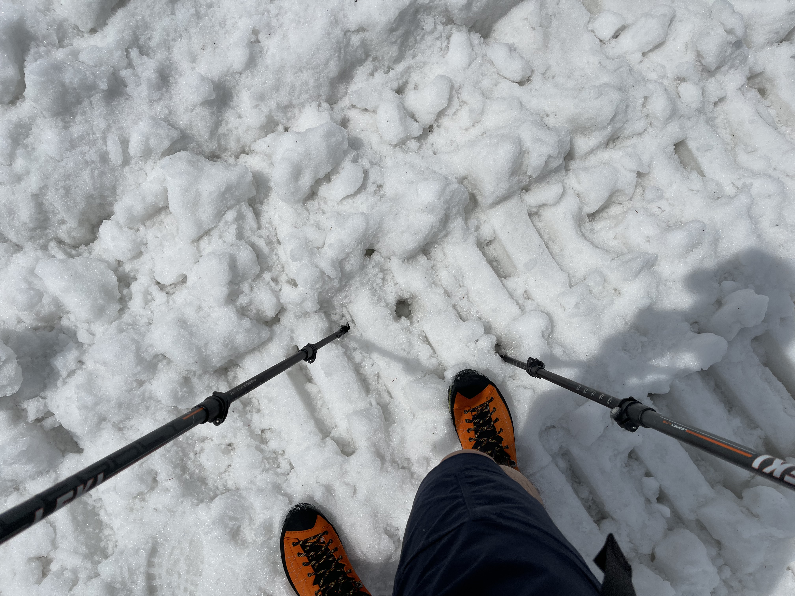
After about 1,500 feet of climbing, the temperature dropped and the slope got steeper, so I put on pants and crampons. Behind me, Mount Jefferson came into view. I love these snowcapped volcanoes and how you can spot them from miles away. Along the way, I found a container of rock salt. Timberline uses the salt to melt the top layer of snow, which then refreezes into a smoother, faster surface. The snow becomes less “grabby” almost instantly. It is one of the tricks that makes summer skiing on Mount Hood possible.
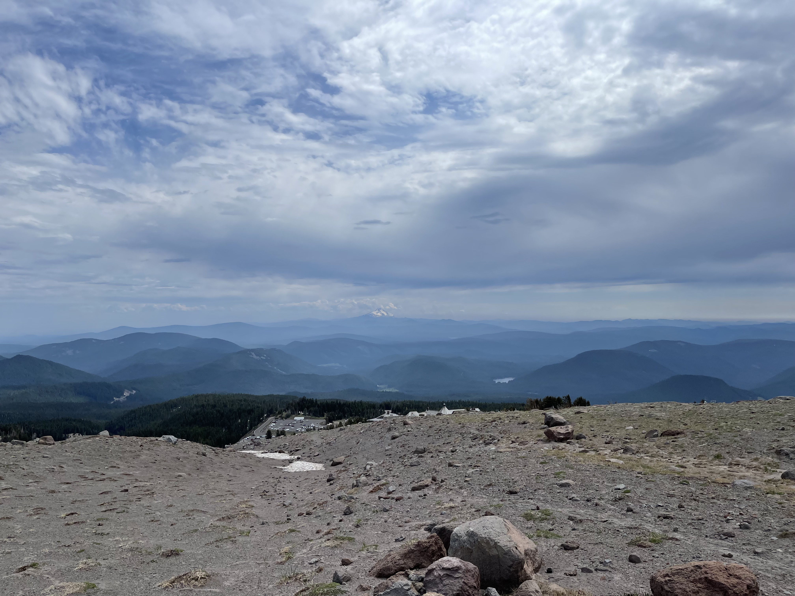
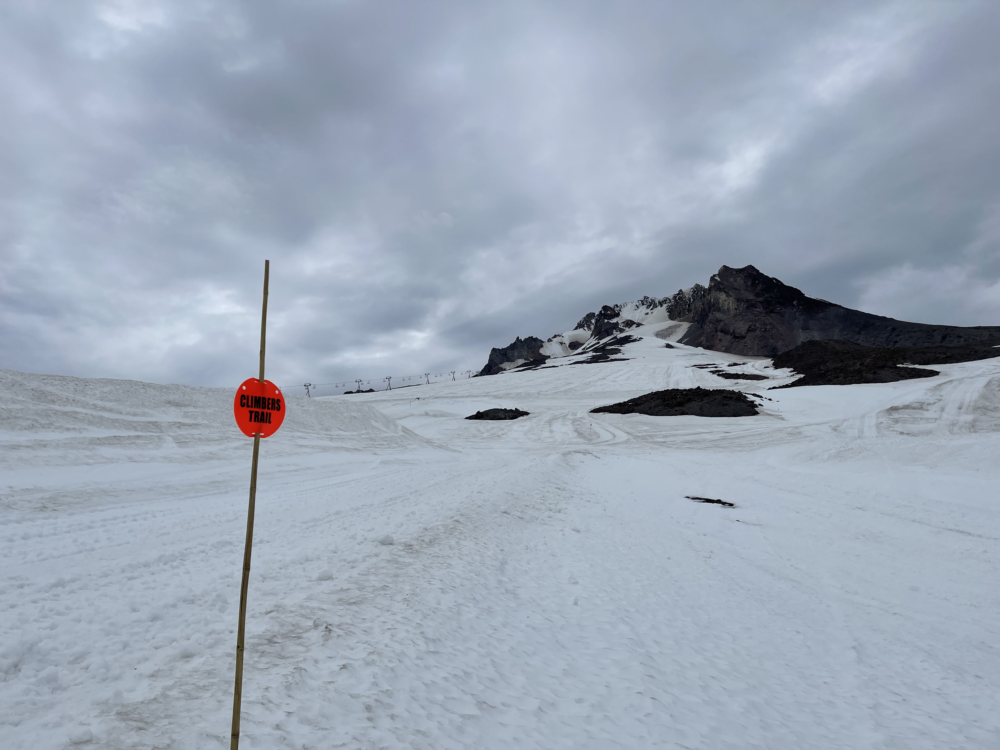
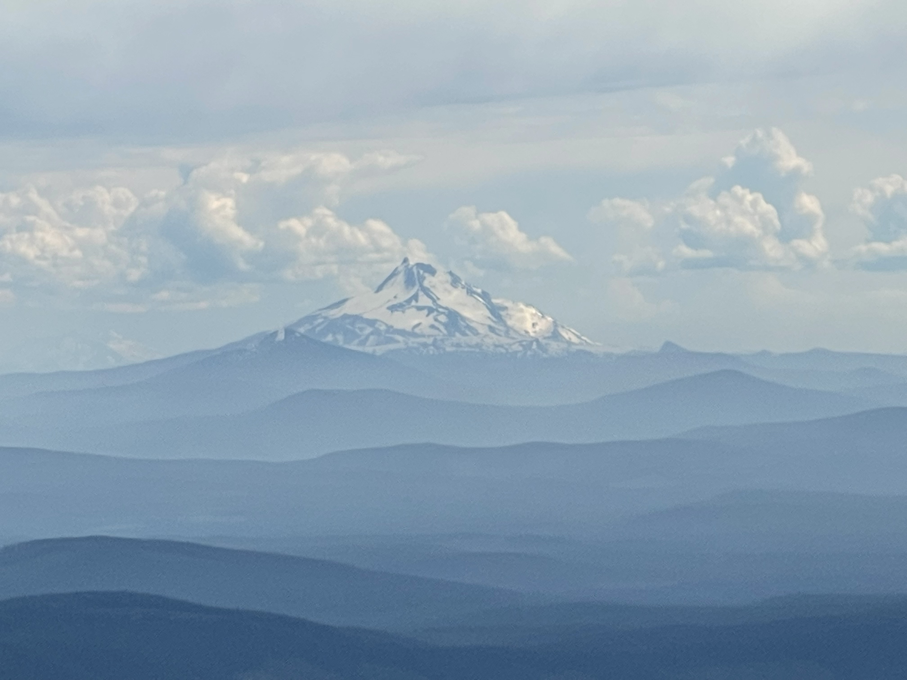
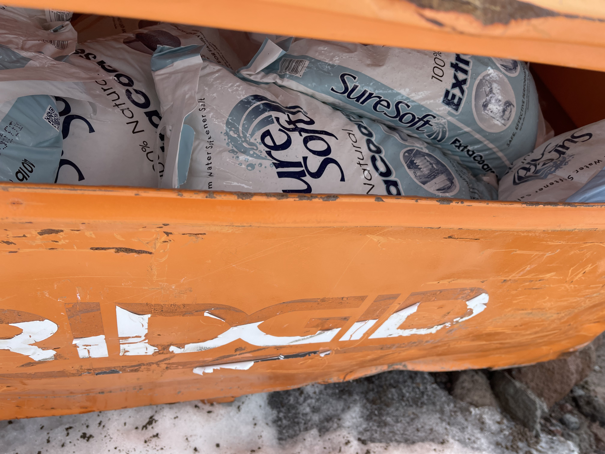
After a long, tiring climb, I passed the top of the Palmer chairlift and reached the saddle beside Illumination Rock. I was glad I had my mountaineering boots and crampons because they made the steep final section much easier. After enjoying the view, I headed back down and reached my car around 6:30 p.m. From there, I drove to Still Creek Campground for the night.
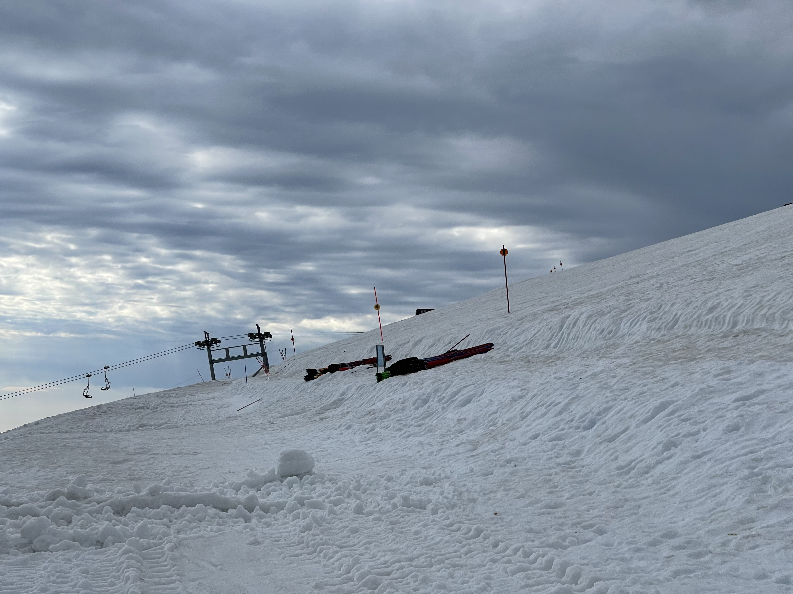
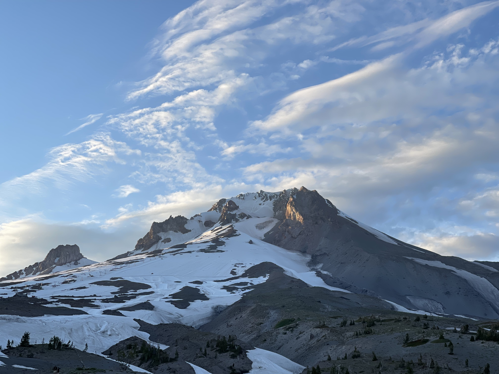
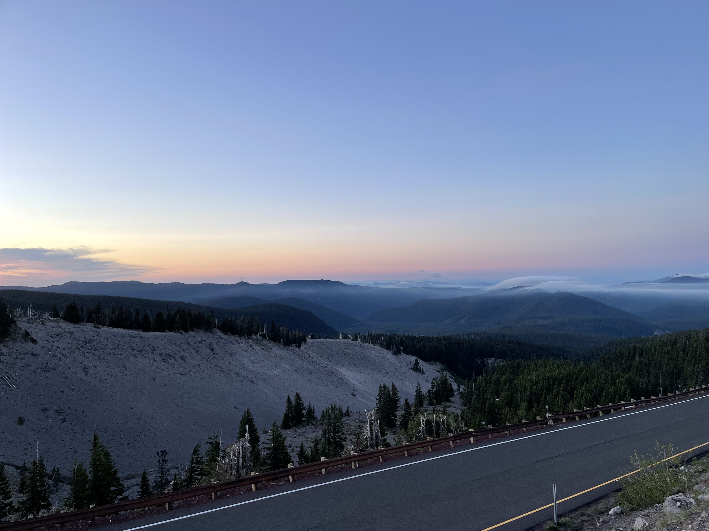
I woke up around 4:50 the next morning and drove back to Timberline Lodge. I ate breakfast and drank a cup of coffee in the parking lot while watching the sun rise over Mount Hood. The ticket office opened at 6:30, and the lifts started running at 7:00. To my surprise, it was the longest lift line I had ever seen. Ski camps from all over the country had filled the mountain, and I waited about 40 minutes for my first chair.
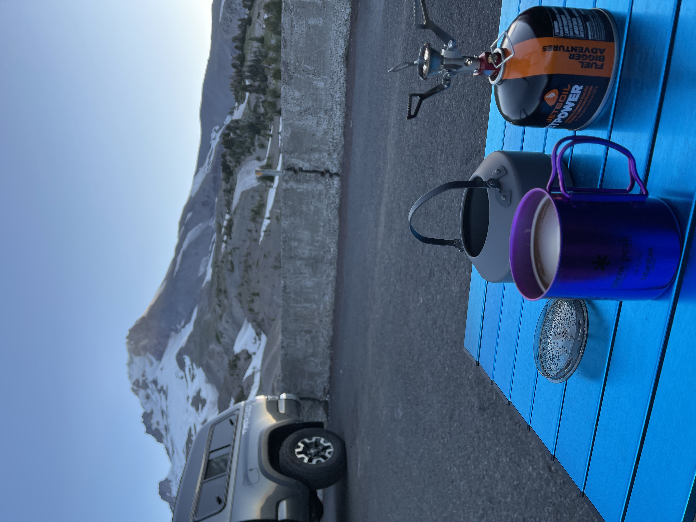
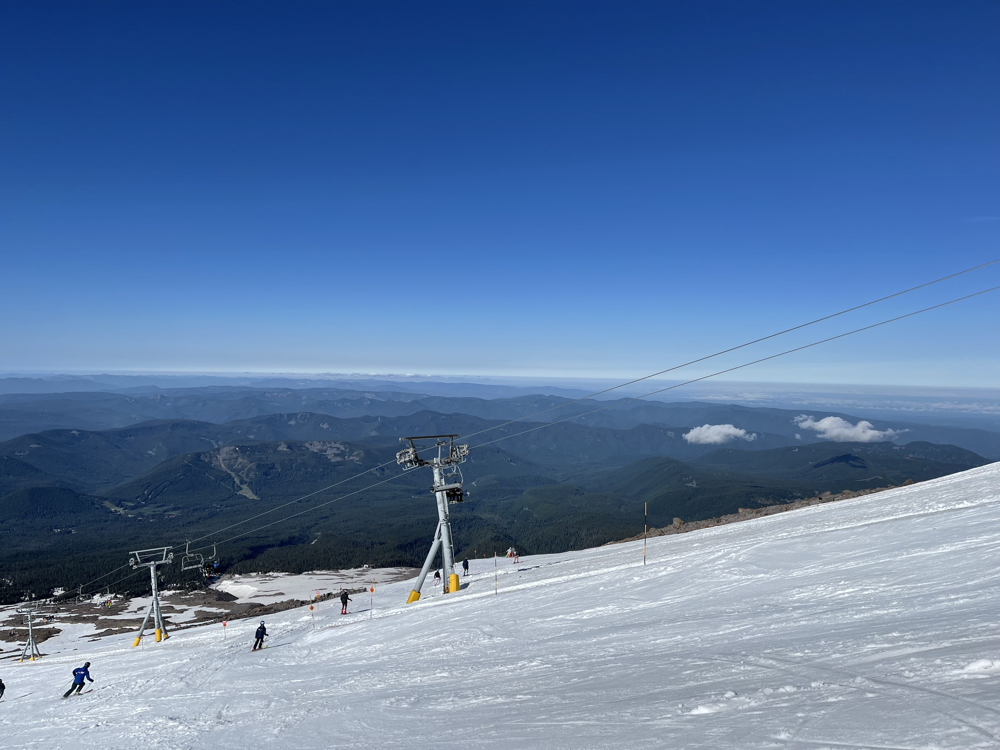
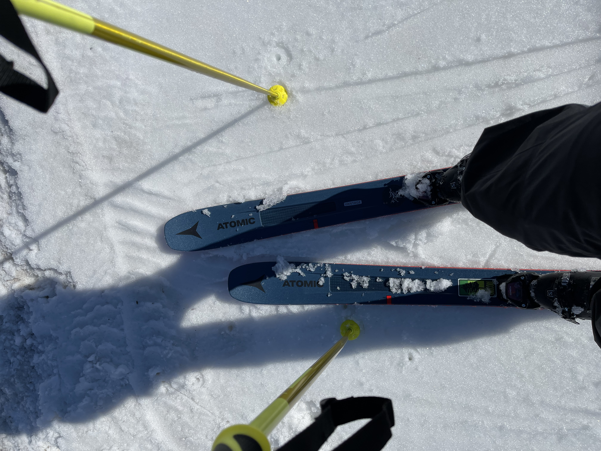
Only two runs were open for summer skiing: Magic Mile, a blue run, and Palmer, a black run. Maybe it was the summer conditions, but Magic Mile felt more like a green, while Palmer felt like an easy blue. The snow was pretty good near the top but turned slushy farther down. I managed only six runs because the lift line was so long, but skiing in June was still a really cool experience. Mount Hood never disappoints me.